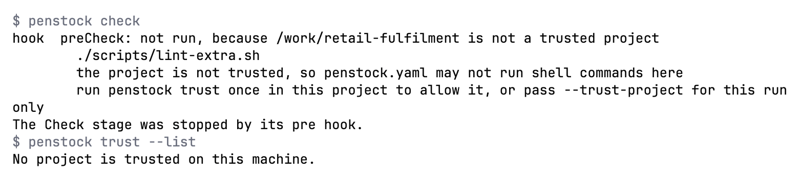

Guide / Plans, privacy and help
Security and privacy
A complete list of what leaves your machine, when, and to whom. Nothing is sent by surprise, and nothing is sent to track you.
The short version
- Penstock has no telemetry. It does not report what you do, what you open or what your diagrams contain.
- Your diagrams leave your machine only when you deploy them, to the engine you configured.
- Passwords and secrets go to the secret store of your tool, never to a project file, and never to the web page inside the editor.
- The AI chat is optional and starts an agent only when you turn it on. The agent runs on your own account, and every change it wants to make to your project is asked before it happens. See The AI chat.
- This website sets no cookies. It counts page views with Cloudflare Web Analytics, which uses no cookies, does not fingerprint visitors and does not follow them across sites. That script is the only thing the site loads from another address. Pressing a Buy button sends the browser to Polar's checkout. See This website and Opening the checkout.
Everything that talks to the network
| What | When | Where to | What is sent |
|---|---|---|---|
| Deploy | When you press Deploy, or run penstock deploy. |
The address in deployment.url. |
The file you deploy, and the credentials of the profile. Nothing else from the project. See Deployment. |
| OAuth token request | With auth.type: oauth, just before a deploy or an engine call. |
The tokenUrl you configured. |
The client id and secret, and the audience if you set one. |
| Engine questions | Only when you act: Check Workers, Monitor, Scenarios, or Open run. | The engine of the profile in force. | Requests to the engine's REST API, with the profile's credentials. The tool adds the credentials. The web page in the editor never sees them. |
| Connector templates | When you open Templates…, or press Download on a missing template. Never when your tool starts. Never when you open a diagram. At most once a day. | api.github.com (the release list of camunda/connectors) and codeload.github.com (the release archive). |
A plain HTTPS request. No credentials, no cookies, no project data. It uses the proxy settings of your tool. See Element templates. |
| Licence | Once a day, in the background. When you buy or sign in. | The licence service, Polar. | The licence, and the machine it is for: a one-way hash of the machine's own id, and the host name as a label so you can recognise it. When you sign in: your e-mail address and the code. Never a diagram. Nobody copies a key: buying opens Polar's checkout and Penstock polls it, and signing in is an e-mail code. See Buying and signing in. |
| The AI agent | Only when you use the AI chat and have turned an agent on. Never when the AI chat is off: then no agent is started. | The agent you chose, which runs on your machine and talks to its own provider on your own account. | Penstock sends the agent your messages, what you attach and its own tools, which read your diagrams, rules, scenarios and code links from the project. What the agent then sends to its provider is the agent's business and its provider's, as with the agent's own command line. Penstock has no model and no account of its own for this. See AI chat. |
| The agent list and an agent's installation | When you open the agents screen and its list is more than a day old, when you press Refresh the list, and when you press Install or Update. | cdn.agentclientprotocol.com for the registry and its icons. For an agent Penstock installs: the download address the registry gives, or the package source that npm or uvx uses on your machine. |
A plain request. No credentials, no cookies, no project data. A download is checked against the checksum the registry gives and thrown away if it differs, and an agent with no checksum is not installed by Penstock. Without a connection the list that came with Penstock is used. See AI agents. |
| The command line download | The first time a project needs a version of the penstock command that is not on the machine. That includes the commands a tool runs for you when the project has no penstockw. |
The npm registry, package @kern0x1b/penstock-cli. |
A normal npm install request. |
| Pull request comments | When penstock bot or penstock report runs in your pipeline. |
Your own Git host. | The comment, using the pipeline's own token. See Pipelines, reports and the bot. |
| The checkout | Only when you press a Buy button on the Plans page, or buy from your tool. | Polar, the merchant of record. The address is a Polar checkout link. | Your browser asks Polar for its checkout page, so Polar sees your address and what your browser sends to any web page. What you type there, such as your e-mail and card, goes to Polar and not to Penstock. See Opening the checkout. |
| The education link | When you press the link. | Your browser. | Nothing from Penstock. |
That is the whole list. There is no update polling, no crash reporting and no usage statistics. Share as HTML and Import work entirely on your machine.
What a deployment sends
One request per deployment. It carries the file you deploy, as multipart form data, and the deployment settings from penstock.yaml (name, source, tenant). It does not carry other diagrams, element templates or the settings file. The request is made by your tool, not by the web page in the editor, so no CORS setup is needed on the engine. Timeouts are 10 seconds to connect and 30 seconds for the request.
Credentials
- In an editor the password or client secret goes into the secret store of your tool, once for each profile.
- The web page in the editor never reads a secret. It is told only whether a secret is saved. Leave the field empty to keep it. Type to replace it.
- On the command line the secrets come from
PENSTOCK_PASSWORD,PENSTOCK_CLIENT_SECRETandPENSTOCK_TOKEN. - Nothing secret is ever written to
penstock.yamlorpenstock.local.yaml. - Penstock has no option to skip TLS certificate checks. An engine with a private certificate must be trusted by the runtime of your tool.
Scenario runs are safe by design
A scenario run deploys a test build of its own. Every process, decision, form and the calls between them in that build carries a penstock.<run>. prefix, so the engine never takes it for a version you deployed, and what is left on the engine afterwards is what you deployed. Every resource is marked with the run, so an interrupted one can be cleaned up by the next.
- It goes only to an engine marked
deployment.forTests: true, or to a local engine on this machine after one confirmation. In the editor it asks once per profile. In a terminal it asks once per run. A pipeline is never asked: without theforTestsmark, the run is refused. - Afterwards it removes the build and its instances.
- The host enforces the same rule itself. Every call of a run, and anything that deletes, cancels, answers jobs or writes variables, is refused on any other engine.
- A list of deployed builds is kept (
~/.penstock/test-builds.jsonfor the command line), so the next run can remove what an interrupted one left. - Traces are written only under the project's
.penstock/runs/, which has its own.gitignore.
Trust
- Commands that a tool starts for you, and
preDeployandpostDeployhooks run from an editor, run only in a project you have marked as trusted in that tool. - The review bot reads diagrams and
penstock.yaml. It never runs the hooks that a pull request's configuration might declare. - The review bot answers a
/penstockcomment only from someone who is an owner, a member or a collaborator of the repository, and never on a pull request from a fork. It says so in one line naming both repositories, and does not check the fork out or run anything from it, so a fork cannot be executed with a token that writes to the repository. - The MCP server takes absolute paths. When the AI client tells it which folders are open (MCP roots), it refuses everything outside them.

The AI chat
- The agent is a program of your choice that runs on your machine and on your own account. Penstock starts it only when the AI chat is on and an agent is turned on. Setting AI chat to Off stops the agent process.
- The agent does not write to your project behind your back. Every write is asked before it happens, and a write is never remembered: there is no Always, and a question nobody answers is cancelled after a while. A change to a diagram is first drawn on the canvas and checked. See AI chat.
- The agent gets Penstock's own MCP server,
penstock mcp, to read diagrams, rules, scenarios and code links. What the server returns is bounded, and when the client tells it which folders are open, it refuses everything outside them. See The MCP server. - The chats are kept on your machine, one file for each, readable only by you, in
~/.penstock/chats. Deleting a chat removes its file. - The agent session a project shares between windows and tools is reached on
127.0.0.1only, with a token that lives in a file only you can read.penstock agent serve, which serves a project's chats to a plugin of your tool, listens on127.0.0.1too.
Packages that are not pinned never run
Nothing the command line writes, and nothing an editor starts, runs an npm package whose version is not pinned. There is no latest fallback. A development build of the command line, or of an editor, runs only a local command, and a published version runs exactly its own version. The hook that penstock init --hooks writes runs the Penstock command line that is on the PATH, or the one in the project's node_modules, before it asks npm for anything. With none installed it prints one line saying where to install it and lets the commit through. The MCP entry that penstock mcp --config prints names the exact version of the command line that printed it.
Penstock Web
penstock web, which serves the editors to a plain browser, listens on 127.0.0.1 unless you ask for another address, in which case it warns you on the terminal, and its page needs a random token, which is part of the address it prints when it starts. A request from another origin is refused. See Penstock Web.
Files Penstock writes
~/.penstock/preferences.jsonis readable by its owner only.- The licence, the preferences, the trusted projects, the editor's configuration, templates and the files you save are replaced whole through a temporary file next to them, never half written. A licence file that another program is writing is read again instead of being taken for a missing licence, and a damaged one is kept beside the trial.
- A stuck lookup of the machine's id, an unreachable token endpoint, the connector catalogue or a slow engine no longer holds the editor or a deployment for minutes.
- The command line refuses to treat a filesystem root or a home folder as a project, and carries on past folders it cannot read.
penstock editrefuses to overwrite a diagram that changed while it was open, andfmt,layoutandimportwrite their files whole.
The shared HTML file
A file made with Share as HTML loads nothing and sends nothing. It makes no network request, uses no CDN, has no telemetry, and carries a content security policy that forbids all of it.
Opening the checkout
The Buy buttons on the Plans page are links to a Polar checkout page. Pressing one opens Polar's page, either in a new page or, where the site has switched it on, in a frame over this one. Either way it is Polar's page that loads. Polar sees the visit, and whatever you type there goes to Polar. Penstock never sees your card.
- Nothing else on this site contacts a third party, apart from what This website says about analytics. No page loads a font, an image or a stylesheet from another site.
- The prices are read at build time, when the site is generated, and are part of the page. Your browser does not ask Polar for them.
- The access token stays with the owner. It is used only on the machine that builds the site. It is never in the site or in the repository.
- Without JavaScript the Buy button still works. It is an ordinary link.
- The button that opens the checkout in a frame uses Polar's own script,
@polar-sh/checkout(Apache-2.0). It is served from this site, not from a CDN, and it does nothing until you press a Buy button. Its licence is in vendor/polar-checkout/LICENSE.txt.
This website
The pages you are reading are plain HTML and one style sheet. They set no cookies and load no fonts, images or code from other sites. The fonts are served from this site. It counts page views with Cloudflare Web Analytics, which uses no cookies, does not fingerprint visitors and does not follow them across sites. That script is the only thing the site loads from another address. GitHub, which hosts the site, keeps its own server logs. The privacy policy has the whole of it. Apart from the checkout above, the only links that leave this site are ordinary links that you click.
Report a vulnerability
Do not open a public issue. Read SECURITY.md and report it privately.
What is specific to your tool
JetBrains
- Secrets are kept in the IDE password safe, once for each profile.
- The Run Penstock commands in the tool window, and the
preDeployandpostDeployhooks of an IDE deploy, run only in a trusted project. From IDE 2025.2 the IDE's own Trust Project decides, and Penstock never overrides it. Before 2025.2 Penstock asks itself, in a dialog that names the command, and keeps the answer in~/.penstock/trusted-projects.json. Without apenstockwin the project, the IDE runsnpx @kern0x1b/penstock-cli, which downloads the command from npm the first time. - A private certificate must be trusted by the Java runtime of the IDE. Penstock never skips the check.
- The connector download uses the IDE proxy settings.
VS Code
- Passwords and client secrets are kept in VS Code's secret storage, once for each workspace, profile and field.
- The
preDeployandpostDeployhooks ofpenstock.yamlrun only in a trusted workspace. - Files are read and written only inside the workspace folders, or where you chose in a dialog.
- The connector catalogue is downloaded on demand into
~/.penstock/connectors, with a cap of 64 MB.
Command line
- Secrets come from
PENSTOCK_PASSWORD,PENSTOCK_CLIENT_SECRETandPENSTOCK_TOKEN. Set them in the environment of the command, never in a file. - A
hooks:command frompenstock.yamlruns forcheck,layoutanddeployonly in a project you have trusted withpenstock trust, or for one run with--trust-project. Inside a pipeline, whereCIis set, hooks run without a question. A hook sees onlyPENSTOCK_FILES,PENSTOCK_ROOT,PENSTOCK_STAGEandPENSTOCK_PROFILE, never the licence key, a password or a token. - The wrapper downloads the pinned version from npm once, into
~/.penstock/wrapper. After that it runs offline. - The connector download uses
HTTPS_PROXYandHTTP_PROXYwhen they are set.
Common problems
- My firewall shows a request to GitHub from my tool.
- You opened the connector browser, or pressed Download on a missing template. That is the only GitHub request. It is at most once a day.
- My firewall shows a request to npm.
- A command line action needed a version of
@kern0x1b/penstock-clithat was not on the machine.penstock initadds a wrapper that pins the version and keeps the download in~/.penstock/wrapper. - I work offline.
- Everything works offline except deploy, engine questions, the connector download and the licence check. An active licence works 30 days without a connection.